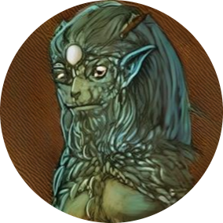
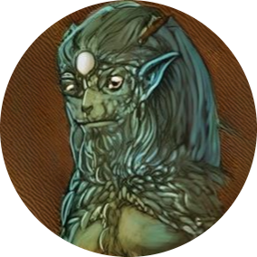

Epona, a deusa celta da terra associada aos cavalos, tem raízes profundas na mitologia e na espiritualidade celta. No entanto, devido à natureza oral da cultura celta e à falta de registros escritos detalhados, muitos detalhes precisos sobre sua origem e mitologia específica permanecem desconhecidos. A palavra "Epona" é de origem celta, mas as nuances exatas de seu significado e origem histórica são difíceis de determinar devido à escassez de fontes escritas. No entanto, a presença de Epona em várias regiões da Europa celta sugere que sua veneração era difundida entre as tribos celtas. Sua conexão com cavalos, animais vitais para a subsistência e o poder militar das antigas comunidades celtas, ilustra a importância prática e espiritual que ela tinha na vida cotidiana desses povos. A deusa Epona também foi influenciada e sincretizada com outras divindades ao longo do tempo, especialmente durante a romanização de partes da Europa habitadas pelos celtas. No contexto romano, sua adoração foi muitas vezes associada à deusa Vênus, que também tinha atribuições relacionadas à fertilidade e ao amor. Além disso, é interessante notar que o culto a Epona se estendeu para além do período celta e romano. Com o tempo, ela continuou a ser uma figura venerada em várias tradições espirituais e religiosas, incluindo algumas formas de neopaganismo contemporâneo, onde é vista como uma deusa da natureza, dos cavalos e da fertilidade. Essa continuidade na devoção a Epona destaca sua resiliência como uma figura mitológica que transcendeu fronteiras históricas e culturais.
Epona